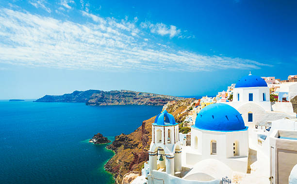

My recent trip to Ladhak
Overview
Ladhak ministered by India union territory nd constitutes an eastern portion of the larger Kashmir region that has been the subject of a dispute between India and Pakistan since 1947 and India and China since 1959.[2] Ladakh is bordered by the Tibet Autonomous Region to the east, the Indian state of Himachal Pradesh to the south, both the Indian-administered union territory of Jammu and Kashmir and the Pakistan-administered Gilgit-Baltistan to the west, and the southwest corner of Xinjiang across the Karakoram Pass in the far north. It extends from the Siachen Glacier in the Karakoram range to the north to the main Great Himalayas to the south.[12][13] The eastern end, consisting of the uninhabited Aksai Chin plains, is claimed by the Indian Government as part of Ladakh, but has been under Chinese control. Learn MORE
In the past, Ladakh gained importance from its strategic location at the crossroads of important trade routes,[18] but as Chinese authorities closed the borders between Tibet Autonomous Region and Ladakh in the 1960s, international trade dwindled. Since 1974, the Government of India has successfully encouraged tourism in Ladakh. As Ladakh is strategically important, the Indian military maintains a strong presence in the region.
Athens is the capital and largest city of Greece. A significant coastal urban area in the Mediterranean, Athens is also the capital of the Attica region and is the southernmost capital on the European mainland. With its urban area's population numbering over 3.6 million, it is the eighth-largest urban area in the European
The final trip itineray we chosse
| DATE | Location | Description |
| 5th MAY | Athens | Row 2, Col 3 |
| 6TH MAY | Milos Island | Take a ferry |
| 7TH MAY | Milos Island | plaka island |